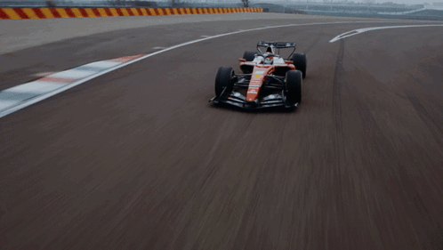

Drivers name: Charles Leclerc
Car (SF-26): Features a return to a glossy red livery with significant white accents
more about Charles Leclerc : Charles Leclerc is a Monégasque driver for Scuderia Ferrari HP, widely regarded as one of the
2026 Season Status
Contract: He is currently under a long-term contract with Ferrari that reportedly runs through 2029, though it includes a performance-related exit clause that could allow him to leave after the 2026 season if the team does not provide a title-contending car.
teammate:For the 2026 season, he is paired with seven-time World Champion Lewis Hamilton, forming one of the most high-profile driver lineups in the sport's history.
Current Performance: During pre-season testing in February 2026, Leclerc was among the fastest drivers, noting that while the new SF-26 is challenging to drive due to complex hybrid energy management, he finds the technical reset "super interesting"